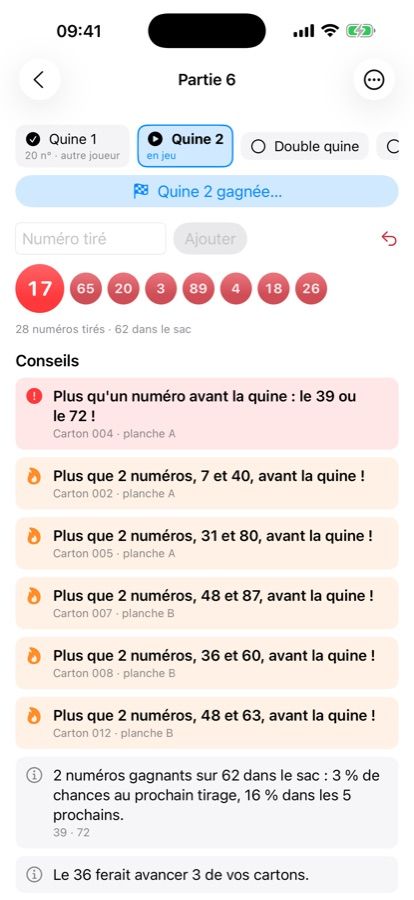
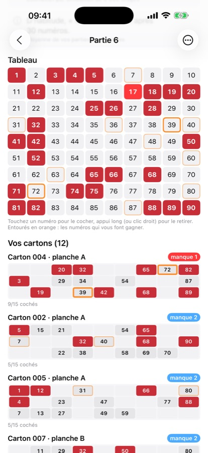
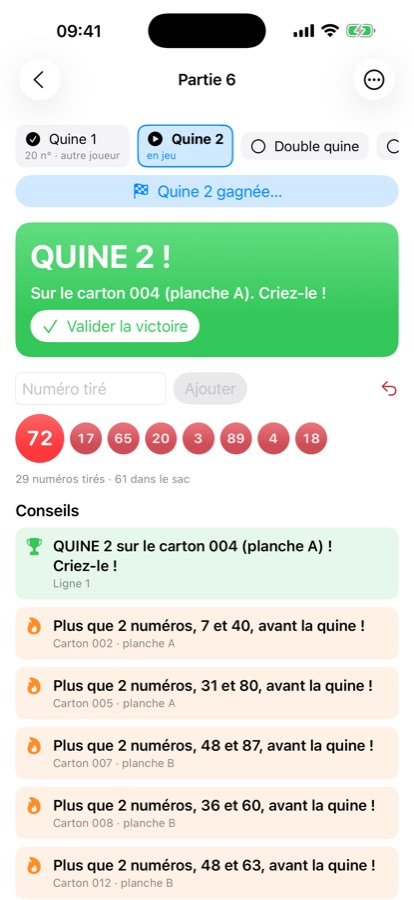
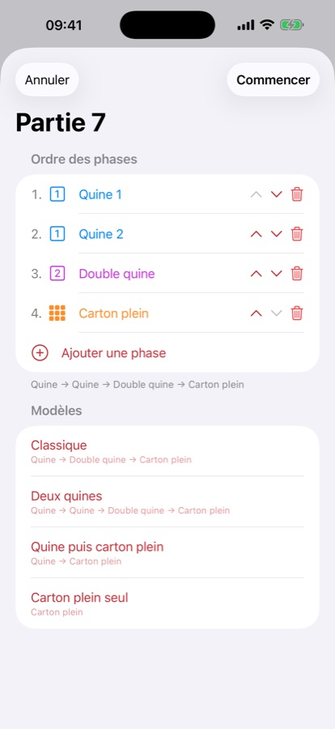

Premiers pas
L'app s'organise en soirées : une soirée, c'est un lieu, une date, vos cartons, et les parties jouées ce soir-là.
- Touchez + pour créer une soirée. Indiquez le lieu, la date et l'ordre des phases habituel de la salle.
- Si vous rejouez les mêmes cartons, choisissez Reprendre ceux de… une soirée précédente.
- Ouvrez la soirée, saisissez vos cartons dans Mes cartons, puis touchez Nouvelle partie.
Au premier lancement, trois soirées d'exemple fictives sont chargées pour découvrir l'app. Supprimez-les quand vous voulez (glisser vers la gauche, ou clic droit sur Mac).
Saisir vos cartons
Un carton de loto compte 3 lignes de 5 numéros, rangés en 9 colonnes (1 à 9, 10 à 19… 80 à 90). Dans l'app, il suffit de taper les 15 numéros dans l'ordre de lecture, ligne par ligne. Ils sont placés tout seuls dans la bonne colonne.
Par exemple, en tapant :
7 28 30 56 656 11 45 68 9035 44 54 78 81
on obtient :
| 7 | 28 | 30 | 56 | 65 | ||||
| 6 | 11 | 45 | 68 | 90 | ||||
| 35 | 44 | 54 | 78 | 81 |
L'app signale les erreurs : numéro en double, deux numéros d'une même dizaine sur une ligne, moins de 15 numéros…
Donnez à chaque carton un numéro et, si vous le souhaitez, une planche (A, B…), le numéro de série imprimé dessus et le nom du joueur. Les cartons sont regroupés par planche, et les conseils indiquent toujours la planche concernée : pratique pour retrouver le bon carton sur la table.
Jouer une partie


Saisir les numéros
- Touchez le numéro annoncé sur le tableau de 1 à 90. Le dernier numéro sorti apparaît en rouge vif.
- Ou tapez-le dans le champ Numéro tiré puis Ajouter (sur Mac, Entrée suffit). Vous pouvez en taper plusieurs d'un coup :
12 45 3. - Une erreur ? Le bouton ↶ retire le dernier numéro. Pour en retirer un autre : appui long sur le tableau (clic droit sur Mac) puis Retirer.
Quand vous gagnez
Dès qu'un de vos cartons remplit la phase en cours, un grand bandeau vert « QUINE ! » s'affiche avec le carton concerné et l'appareil vibre. Criez-le dans la salle !

Touchez Valider la victoire, ou le bouton Quine gagnée… quand c'est un autre joueur qui gagne. Indiquez qui a gagné et, si vous voulez, le lot. La partie passe à la phase suivante.
Validé trop vite ? Menu ⋯ › Rouvrir la dernière phase gagnée.
Annonces vocales
Menu ⋯ › Annonces vocales : l'app annonce à voix haute « Plus qu'un numéro pour la quine : le 39 » ou « Quine sur le carton 4 ! ». Pratique quand on a les yeux sur ses cartons papier.
Comprendre les conseils
Pendant la partie, l'app calcule en permanence ce qui manque à chacun de vos cartons pour la phase en cours :
Sur le tableau et sur les cartons, les numéros entourés en orange sont ceux qu'il vous faut : trait épais pour ceux qui vous font gagner immédiatement.
Les autres informations :
- Le numéro qui ferait avancer le plus de cartons.
- Une estimation du nombre de numéros avant votre quine ou carton plein, obtenue en simulant 3 000 tirages du reste du sac. Elle suppose que personne d'autre ne gagne avant vous.
- La moyenne habituelle : après combien de numéros cette phase est tombée lors de vos parties enregistrées.
Quine, double quine, carton plein : l'ordre des phases
- Quine : une ligne complète (5 numéros) sur un carton.
- Double quine : deux lignes complètes sur le même carton.
- Carton plein : les 15 numéros du carton.
Chaque salle a ses habitudes. Au début de chaque partie, choisissez l'ordre des phases, par exemple :
- Quine → Double quine → Carton plein (classique)
- Quine → Quine → Double quine → Carton plein
- Carton plein seul
Utilisez les modèles proposés, ou composez le vôtre avec Ajouter une phase et les flèches ▲ ▼. L'ordre se modifie aussi en cours de partie (menu ⋯ › Modifier l'ordre des phases) : les phases déjà jouées sont conservées.

Deux quines de suite ? Si vous avez gagné la première quine, la ligne gagnante ne compte plus pour la seconde : l'app attend une autre ligne.
Statistiques
Chaque soirée a ses statistiques ; Statistiques globales regroupe toutes vos soirées :
- après combien de numéros tombent la quine, la double quine et le carton plein (moyenne, minimum, maximum) ;
- le nombre de sorties de chaque numéro, les plus et les moins sortis, ceux absents depuis le plus de parties ;
- la répartition des numéros par colonne, comparée à la répartition attendue ;
- le nombre moyen de cases cochées par carton et vos victoires.
Pour savoir quand les phases tombent, pensez à valider chaque phase (gagnée par vous ou par un autre) pendant la partie.
Vos données
- Tout est enregistré automatiquement sur votre appareil, après chaque numéro.
- Exporter : ⋯ en haut de la liste des soirées › Exporter toutes les données… (fichier JSON). Gardez-le en sauvegarde ou transférez-le sur un autre appareil.
- Importer : ⋯ › Importer un fichier…. Les soirées déjà présentes sont mises à jour, les autres ajoutées.
- Exemples : ⋯ › Recharger les exemples remet les soirées de démonstration.
L'app ne collecte rien et n'envoie rien sur Internet. Voir la politique de confidentialité.
Questions fréquentes
L'app n'a pas vu ma quine.
Vérifiez d'abord le carton dans Mes cartons : une erreur de saisie est vite arrivée. Vérifiez ensuite la phase en cours dans le bandeau du haut : si la partie en est à la double quine, une seule ligne ne suffit plus. Enfin, si vous avez déjà gagné une quine avec cette ligne, elle ne compte pas pour la quine suivante.
J'ai validé une phase par erreur.
Menu ⋯ de la partie › Rouvrir la dernière phase gagnée. Retirer un numéro saisi avant la fin d'une phase rouvre aussi cette phase automatiquement.
Où va le 90 ? Et les numéros de 1 à 9 ?
Première colonne : 1 à 9. Dernière colonne : 80 à 90 (elle compte 11 numéros). L'app s'en charge toute seule.
Les statistiques permettent-elles de deviner les prochains numéros ?
Non. Chaque tirage est indépendant : un numéro « en retard » n'a pas plus de chances de sortir qu'un autre. Les statistiques racontent vos soirées passées ; les conseils, eux, reposent sur vos cartons et les numéros encore dans le sac.
Mes données sont-elles synchronisées entre mon iPhone et mon Mac ?
Pas automatiquement. Utilisez Exporter sur un appareil puis Importer sur l'autre (par AirDrop, e-mail ou iCloud Drive).
L'app permet-elle de jouer ou de parier ?
Non. Carton Plein est un outil de suivi pour les lotos joués en salle avec de vrais cartons. Il n'y a ni mise, ni gain, ni jeu en ligne dans l'app.
Combien de cartons puis-je suivre ?
Autant que vous voulez. Les conseils montrent en priorité les cartons les plus proches de gagner.
Contact
Une question, un problème, une idée ? Écrivez-nous en ouvrant un ticket sur la page du projet. Précisez votre appareil (iPhone, iPad ou Mac) et la version de l'app (visible dans l'App Store).